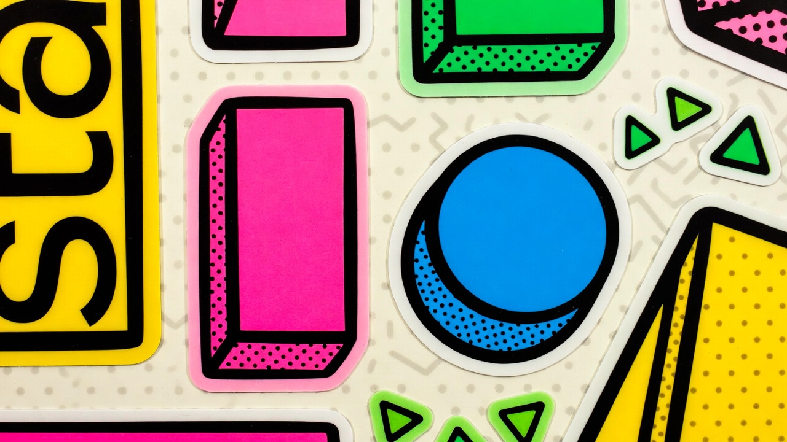

Radical Pink
#FF3366
Electric Yellow
#FFCC00
TEXT MUST BE BLACK
Cyan #00C2FF
Cream #FFFDF5
Display (Logo/Headings)
The Quick
Brown Fox.
Fredoka One / 800 / Tight Tracking
文字を図形として扱う。
Body (UI/Long text)
Pop is about direct communication. Avoid passive voice. Be energetic.
Inter / 500 / Line-height 1.6
Rule: Thick stroke (2px+), Round Caps, Sticker-like fill.
Forbidden Rules
- ✕ Gradient meshes (No 3D gradients)
- ✕ Blurry shadows (Hard shadows only)
- ✕ Serif fonts (Except for irony)
Styling & Posture

HOODIE
COLOR BLOCK

STYLING
EXPRESSIVE
Styling: Synthetic materials, Oversized silhouettes, Color blocking.
Photography Style

HIGH KEY
FLAT LIGHT

LOW ANGLE
DYNAMIC
Photography: High Key, Flat Lighting, Minimal Shadows.
Interactive Elements
Motion Physics
EASING: cubic-bezier(0.175, 0.885, 0.32, 1.275)
High Elevation
Hover to see the 1deg rotation and scale effect.